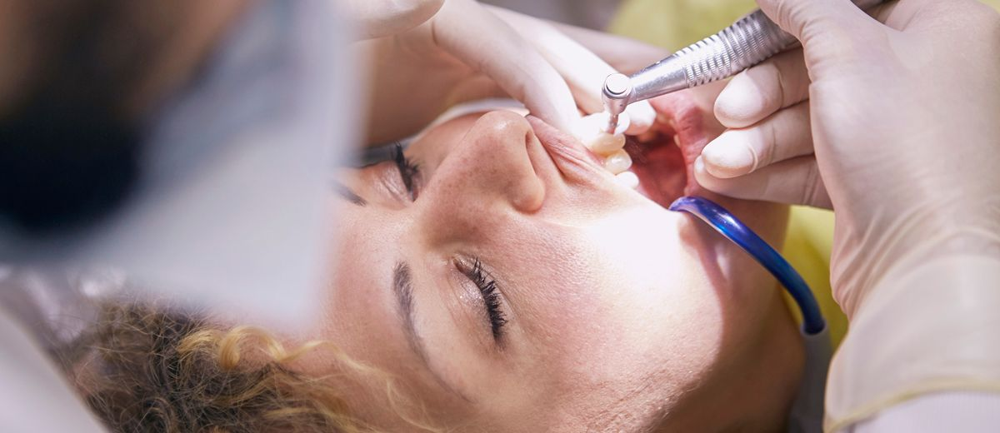

Tu clínica tiene precio o tiene sillones: lo que revela la venta de Donte por 1.000 millones

Los maestros de Ontario no saben nada de dientes.
Pero en 2025 pagaron 1.000 millones de euros por una red de clínicas dentales españolas.
Ontario Teachers' Pension Plan: el fondo que gestiona las jubilaciones de los profesores públicos de Canadá. No especulan. No buscan vender en tres años. Buscan flujo de caja limpio durante las próximas dos décadas.
Y lo encontraron aquí. En Donte Group. 430 clínicas. Vendido.
Cuando un fondo de pensiones compra tu sector, el mensaje es bastante claro: esto genera dinero estable y predecible. Pero hay un matiz que nadie menciona.
No compraron sillones
Es la trampa mental más habitual cuando se habla de consolidación dental: pensar que lo que compran es infraestructura. Locales, equipamiento, pacientes registrados en el sistema.
No. Lo que compran es flujo de caja predecible. Y el flujo de caja predecible solo viene de una cosa: procesos.
- Historia clínica ordenada. Que cualquier dentista del equipo pueda retomar un tratamiento sin preguntar nada al titular.
- Equipo autónomo. Que la clínica funcione aunque el propietario no esté en cada sillón cada día.
- Protocolos reales. Que la primera visita, el seguimiento de presupuestos y la gestión de inasistencias funcionen de la misma forma cada día, independientemente de quién atienda.
- Datos medibles. Tasa de aceptación, ticket medio, inasistencias, pacientes inactivos. Números que un comprador puede auditar y proyectar.
Sin eso, no hay precio. Hay sillones.
El mercado ya lo tiene medido
No es intuición: hay números.
Una clínica donde todo depende del titular se valora a 2,5x EBITDA en el mercado de compraventa. Una con procesos delegados y equipo autónomo alcanza 6x o más. La diferencia supera el 140%.
Esto es lo que el mercado de compraventa de clínicas dentales en España ya refleja en las valoraciones reales. No en teoría: en transacciones firmadas, con due diligence y número sobre la mesa.
El fondo canadiense pagó 1.000 millones porque Donte tenía los números medidos, los procesos documentados y los equipos funcionando. No porque tuviera más sillones que nadie.
¿Qué significa esto para la clínica independiente?
Podría parecer que esta historia solo le interesa a quien quiere vender su clínica en algún momento. No es así.
Una clínica que depende del dentista propietario para cada decisión tiene un problema anterior a cualquier compraventa: no puede crecer sin que el propietario trabaje más.
No puede ampliar horario sin duplicar la presencia del titular. No puede abrir una segunda sede. No puede tomarse vacaciones sin que la facturación caiga. No puede incorporar un asociado sin que haya fricción en cada protocolo no escrito.
La clínica con procesos, en cambio, crece sin que el dentista esté en cada momento. Eso es lo que permite escalar. La venta millonaria es la consecuencia; la operativa cotidiana es la causa.
Por dónde empezar
No hace falta preparar una clínica para venderla. Hace falta prepararla para que funcione bien.
Los procesos que hacen que una clínica funcione sin ti son los mismos que la hacen valuable para cualquier comprador potencial. No son dos cosas distintas: son la misma cosa.
- Protocolo de primera visita. Escrito, entrenado y auditado. No en la cabeza del dentista senior.
- Seguimiento de presupuestos. Con responsable, plazo y guion definido; no dependiente de que el propietario llame personalmente.
- Gestión de inasistencias. Con protocolo de confirmación previa, no de reacción posterior.
- Ficha de paciente completa. Con información suficiente para que cualquier miembro del equipo retome el caso sin empezar de cero.
Ninguno de estos puntos es complejo. Ninguno requiere tecnología cara. Todos requieren decidir que se van a hacer así, siempre, y formar al equipo para que sea así. Eso es exactamente lo que trabaja el Método EBA con clínicas dentales: convertir la operativa cotidiana en un sistema que funciona sin que el dueño esté en cada decisión.
La lectura de fondo
El sector dental español acaba de demostrar que genera flujo de caja predecible a 20 años. Los maestros de Ontario lo saben. Los fondos de private equity lo saben. Los grandes grupos lo saben.
La clínica independiente que tiene procesos compite en ese mismo terreno, a su escala. La que no los tiene, compite solo con el horario y la agenda del propietario.
Un número en la puerta y un dentista al fondo no son un modelo de negocio. Son un oficio. Los dos tienen valor. Pero solo uno tiene precio.
Fuente: Expansión / Ascensium — Adquisición Donte Group por Ontario Teachers' Pension Plan — 2025